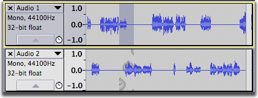

Sync-Locked Track Groups - Time Stretching
From Audacity Manual
Time stretching operations on Sync-Locked Track Groups
The following effects, when applied to a region in a selected track in a Sync-Locked group, will cause the length of non-selected tracks in the group to be adjusted to match the change in length of the selected track. Audio before and after the selection will remain synchronized. Audio within the selection may or may not remain synchronized, as the time stretching effect is not applied to the Sync-Locked tracks.
- Change Speed: Sync-Locked tracks will be adjusted by having the selected region(s) shortened (if the change in speed is positive), or have silence inserted after the selected region (if the change in speed is negative).
- Change Tempo: Sync-Locked tracks will be adjusted by having the selected region(s) shortened (if the change in tempo is positive - faster), or have silence inserted after the selected region (if the change in tempo is negative - slower).
- Repeat: If applied to a selection that does not end on the end of a track, silence is inserted in the Sync-Locked tracks where the repeats are placed in the selected track(s)
- Sliding Time Scale/Pitch Shift: If the time-scale changes shorten the selection then the Sync-Locked tracks will be shortened to maintain time synchronization among the tracks; if the time-scale changes lengthen the selection then the Sync-Locked tracks will have silence inserted to maintain time synchronization among the tracks.
- Truncate Silence: Removes audio from Sync-Locked tracks to maintain time synchronization with remaining sections of the selected track.
- Delay: If applied to a selection that does not end on the end of a track, silence is inserted in the Sync-Locked tracks where the delays are placed in the selected track(s) to maintain time synchronization among the tracks.
Paulstretch also changes the selection length, but currently does not cause changes to Sync-Locked tracks. All other shipped effects do not change the length of the selection, so will not cause any changes to Sync-Locked tracks.
Example-1: Change Speed
- Before
- After Effect > Change Speed
- with a setting of 25%, which makes the selection faster and shorter
- Result: Audio has been removed from the lower audio track. Note that in this case audio within the selection does not remain in synchronization since the Change Speed effect is not applied to the Sync-Locked track. Audio before and after the selection remains synchronized.
Example-2: Repeat
- Before
- 
- After Effect > Repeat
- with 3 repeats
- Result: Silence has been inserted into the lower audio track.